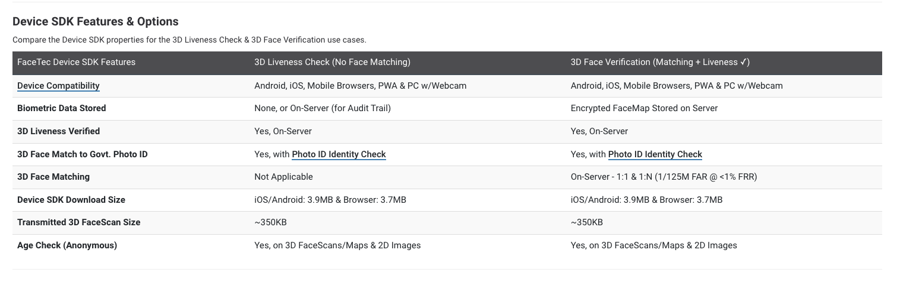
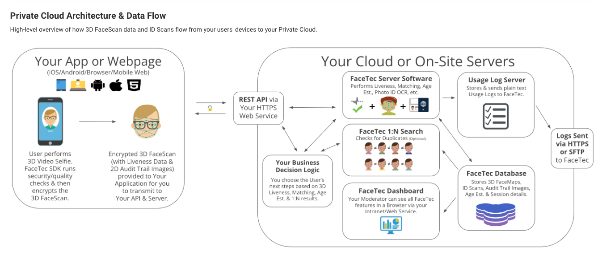

Facetec (development)
Dashboard
Documents
3D Liveness Checked
onEnrollCheck
Features

Main features
Liveness3d checked
Enrollment checked
photoIDMatch checked
Flow

Problems
Compatible: SDK made from javascript classes
Cost: some features need to paid
Stuk: How to get only base64, after facescan